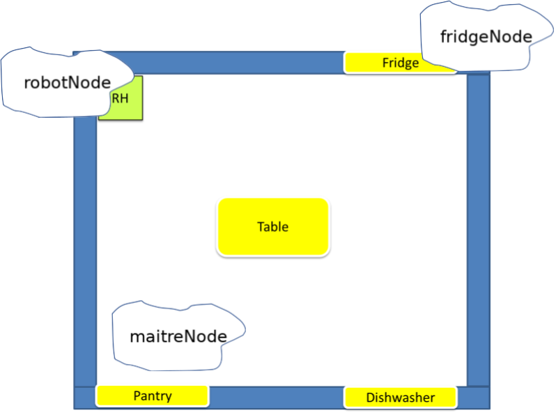
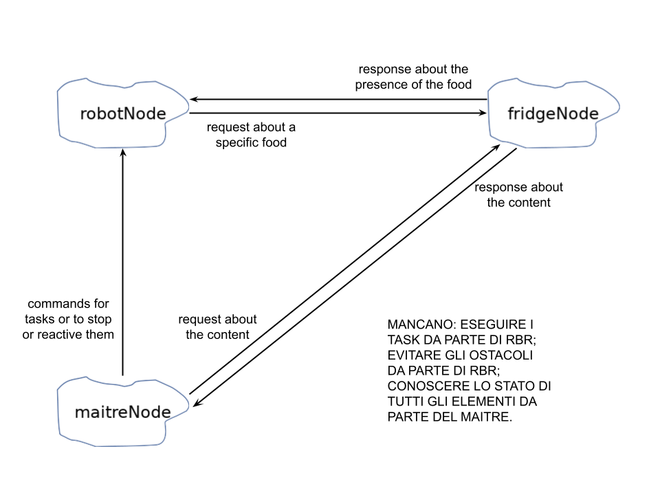
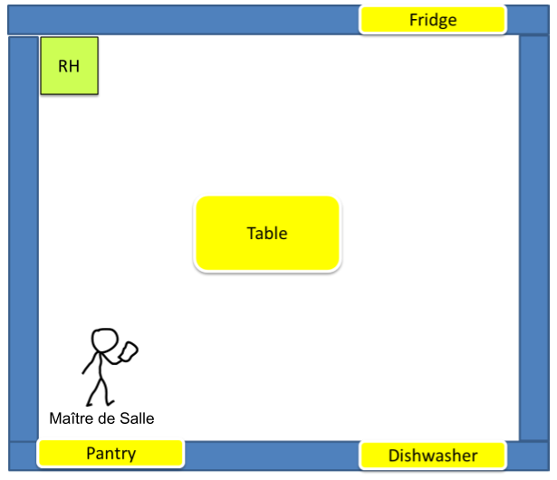
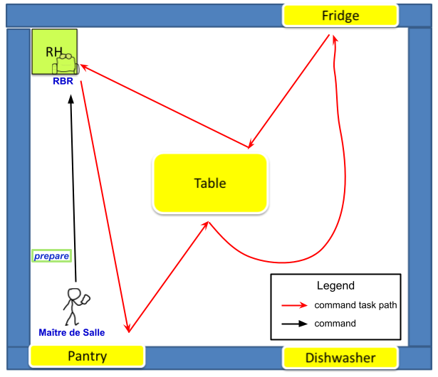
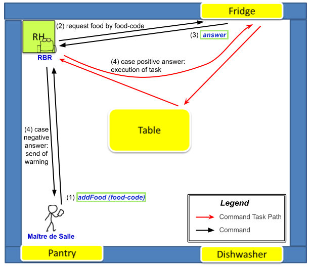
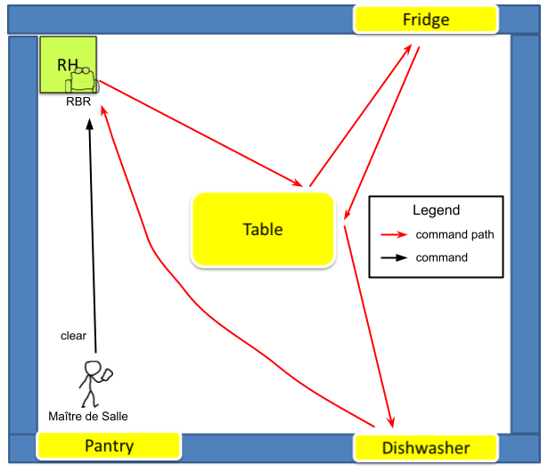
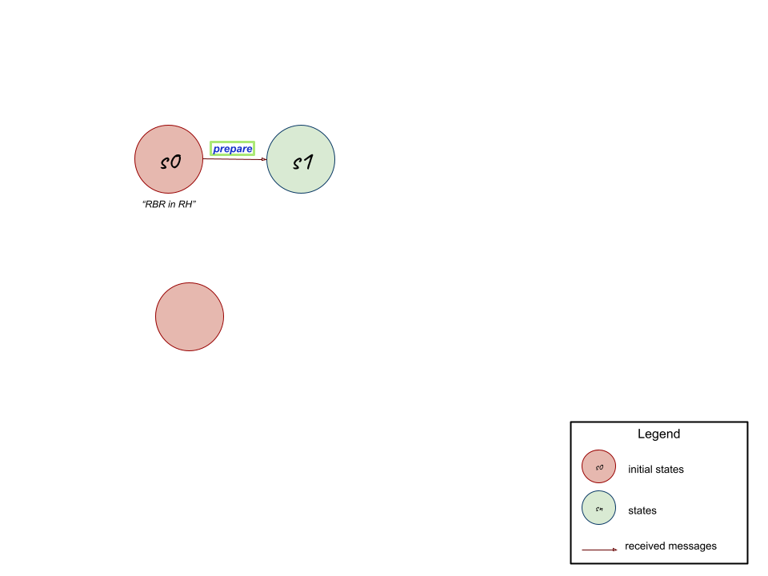
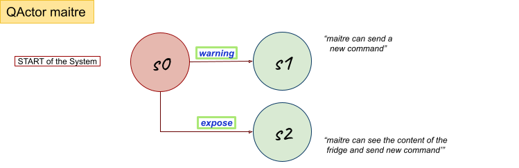
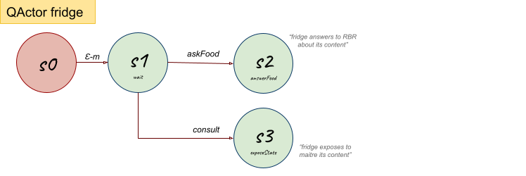

Introduction
Keeping in mind the motto:Requirements
Requirement analysis
Glossary
By the interaction with the customer, here it's exposed an essential glossary about the meaning of the names and of the verbs included in the requirements text given by the customer.| It's an environment equipped with a set of smart and non-smart resources and in which the interactions between these elements happen. These resources are: a |
|
| Person who manages the |
|
| Smartphone application or a user-GUI in a browser used by |
|
| It's a smart device, having knowledge base on his storage, and an "Internet Thing". It's embedded into the wall of the |
|
| It's a non-smart resource embedded into the wall of the |
|
| It's a non-smart resource embedded into the wall of the |
|
| It's a non-smart resource put in the center of the |
|
| It's a |
|
| The customer provided all the documentation about this topic: the documentation about the basicRobot (at basicrobot2021.html), that can be implemented as a virtual robot (at VirtualRobot2021.html) or as a real robot, that can be an mbot (at MBot2020.html) or a nano robot (at LabNanoRobot.html). | |
| It's the position in the |
|
| it's a task that the |
|
| This |
|
| This |
|
| Univoque code associated to a specific food. | |
| This |
Requirements analysis
Once we have understood the main concepts set by the requirements text given by the customer, it's now possible to analyze them.The software system is a distribuited system composed by three main entities:
|
 |
The software running on
|
 |
The software running on
|
|
The software running on
|
A first set of functional Test Plans
Scenario
Here, it's illustrated a possible scenario of the system.| Steps in the scenario | Simplified representation of each step |
|---|---|
|
 |
|
 |
|
 |
|
 |
At every time of the service:
|
|
Test Plans
It's necessary to make some test plans that must be verified for the correct working of the final system, according to the requirements provided by the customer.Below it's reported a first planning of tests:
- Tests of the position of the
RBR that must be on itsRH when system starts and at the end of eachtask ; - Tests of the states for each element (
fridge ,pantry ,dishwasher ,table ) in theroom in every moment of the service (start, end, endtask , consult command); - Tests of all the communications between entities;
- Tests of the path carried out by the
RBR that must be the one expected to execute thetask required by theMaître de Salle ; - Tests of the mutual exclusion of
tasks and of their order of execution; - Tests of the state of the
RBR to verify that it is stopped after receiving stop command and to verify that it resumestask execution after receiving the reactivate command; - Tests of the stop and reactivate commands that can be used by
Maître de salle only when there is a runningtask ; - Test of the capability of the
RBR to avoid all the possible obstacles.
A first model of the system architecture
From the requirements analysis, it's possible to obtain a first model, that is an univoque initial representation of the system architecture, using a meta-model written in a machine-understandable language, like QActor, that describes the main interactions and behaviors between the main system components. In particular, the three main entities are represented by three actors (QActors, that behave as Finite State Machines and work as a CoAP observable resources) and the nodes where they run are represented by contexts.Making this, there were been found some problems, that will be addressed and solved next in the problem analysis:
- the stop/reactivate feature is just described as a dispatcher but is still not working cause none state reads that message;
- the consult feature is still not completed cause it's necessary to manage the state information of smart and non smart elements, but in this representation it's handled only the fridge state information.
| Requirements analysis architecture model/Machine understandable architecture model | A possible graphic representation |
|---|---|
| ReqAnalysisModel.qak |
 |
| Moore State Machine Diagram | |
   |
Problem analysis
- What To Do:
- Identify the main (technical) problems involved by the requirements
+ the most appropriate (software) technologies (the best tools/libraries/supports etc.) to adopt that are necessary and/or useful for building the system
+ evaluate the abstraction gap and give a quantitative measure of the effort/resources necessary to build the system and clarify the constraints (human, technical, economical, etc.) related to both the software product to build and the software production process - Define (a model of) the logical architecture of the system
- Refine the set of functional TestPlan
- In the context of SCRUM:
- define a (first) product backlog
- a possibile set/sequence of SPRINT
- Identify the main (technical) problems involved by the requirements
Identification of the problem and the corresponding solution
Starting from the requirements analysis, it's now necessary to found the problems (involved by the requirements) and to solve them, establishing the most appropriate technologies necessary for building the system.- General System
- The system is distribuited. To model it, it's available the QAk-infrastracture meta-model. This meta-model provides a built-in message-driven tecnology. (In a first moment using the QAk we work just locally.) To support the distribuited features, the MQTT and web tecnologies are introduced and it's required the CoAP support to the fridge comunications.
The system is distribuited. To model it, it's available the **QAk-infrastracture** meta-model, developed and provided by our company/the customer. This meta-model provides a built-in message-driven tecnology. In a first moment using the QAk we work just locally. To support the distribuited features, the **MQTT** and **web** tecnologies are introduced and it's required the **CoAP** support to the fridge comunications.- stanza: come fa il robot a sapere dove andare? e dove si trova la sua RH e gli altri elementi nella stanza? (conoscenza della stanza) --> mapping della stanza
- come fare interagire/comunicare tra loro i vari componenti (smart) della stanza? e le comunicazioni da frigo via CoAP? --> HTTP/MQTT, CoAP...
- come vanno rappresentate le tre entità principali? cosa utilizzeremo? --> Qactors... "it.unibo..qak21.basicrobot-1.0.jar"
- come gestire la memoria sul contenuto delle risorse (non-smart)? (come gestirne lo stato per il comando consult) --> scelta progettuale?? scegliamo che ad esserne a conoscenza e il maître's smartphone?? o altra soluzione? utilizzo di un gestore di risorse non smart che faccia da intermediario e che sia CoAP observable?? Possibilità di gestire lo stato degli oggetti non smart per mezzo di attori dedicati a ciascun oggetto all'interno del contesto del maitre?? Possibilità di inserire un support per configurare dispositivi ora non smart che in futuro possono essere smart?? Possibilità di configurare la stanza e gli oggetti non smart all'avvio del sistema??
- dare una definizione del sistema --> CHE È DISTRIBUITO LO DICIAMO QUA E NON NEI REQUISITI???????? --> sistema distribuito....
- Robot
- Il robot per eseguire i task deve essere in grado di raggiungere tutti gli obiettivi (frigo, tavolo, lavastoviglie, dispensa) con cui interagire. Essendo questi elementi fissi nella stanza, una soluzione può essere il **mappaggio della stanza** all'avvio del robot.
- Il mappaggio può essere implementato tramite le librerie "IssActorKotlinRobotSupport-2.0.jar" fornite della software house.
- Robot come componente proattivo/reattivo (riceve ed esegue i comandi, reagisce agli eventi (prodotti dall'attore sonar) per soddisfare il requisito 'avoid the impact with the mobile obstacles')
- Per soddisfare il requisito 'avoid the impact with the mobile obstacles' possiamo pensare di utilizzare (eventi per gestire) i dati raccolti da un sensore, che può essere reppresentato da un sonar (sia nel robot fisico che in quello virtuale).
- La gestione del sonar è fornita delle librerie "it.unibo.qak21.basicrobot-1.0.jar" della software house/del customer.
- Nel prossimo sprint valuteremo l'idea di rendere il sonar un attore indipendente dal robot.
- The robot component represents the control part of the system. To make such a control independent form the particular type of robot to move (virtual, real-mbot, real-nano, etc.) it is opportune to introduce a resource robotSupport.kt working as a robot-facade.
- stanza: come fa il robot a sapere dove andare? e dove si trova la sua RH? --> mapping della stanza
- stanza: come fa il robot ad evitare gli ostacoli? --> mapping della stanza + sonar
- RBR è DDR: il cliente ci fornisce le documentazioni e le tecnologie. come si possono utilizzare? (basicRobot, ...) --> definire tecnologie fornite dal cliente: basicRobot...
- gestione dei task: devono essere eseguiti in ordine e non possono essere svrapposti. come gestirli? --> gestione dei task: scelta progettuale??
- gestione dei task: il maître come fa a sapere che il robot abbia finito il suo task? lo "vede"? o il robot comunicherà al maître di aver finito il task una volta tornato alla sua RH? (come fa con il warning --> questo sarà un messaggio/risposta o un evento?) --> nuovo requisito o scelta progettuale? il robot invia risposta fine task a maitre??
- **Maitre**
- **valutare utilizzo di console**
- **interfaccia sviluppabile sia web-oriented che come app android**
- Possibilità di gestire lo stato degli oggetti non smart per mezzo di attori dedicati a ciascun oggetto all'interno del contesto del maitre.
- Possibilità di inserire un support per configurare dispositivi ora non smart che in futuro possono essere smart.
- Potremmo prevedere un attore XY in grado di ricevere i warning dal robot in qualsiasi momento.
- Possibilità di configurare la stanza e gli oggetti non smart all'avvio del sistema.
- maître's smartphone: come implementare? userGUI in browser or application? --> web application?
- gestione dei task: il maître come fa a sapere che il robot abbia finito il suo task? lo "vede"? o il robot comunicherà al maître di aver finito il task una volta tornato alla sua RH? (come fa con il warning --> questo sarà un messaggio/risposta o un evento?) --> nuovo requisito o scelta progettuale? il robot invia risposta fine task a maitre??
- i comandi stop e reactivate possono essere eseguiti solo se il robot sta già eseguendo un task e deve essere eseguito dal maître prima il comando stop ed in seguito reactivate. come gestirli? --> gestione comandi stop/reactivate: scelta progettuale??
- **Fridge**
- Possibilità di **utilizzare android per IoT** / oppure **interfaccia web**
- Possibilità di popolarlo all'avvio del sistema.
- come fare interagire/comunicare tra loro i vari componenti (smart) della stanza? e le comunicazioni da frigo via CoAP? --> HTTP/MQTT, CoAP...
- Solutions: Evaluate the abstraction gap and give a quantitative measure of the effort/resources necessary to build the system and clarify the constraints (human, technical, economical, etc.) related to both the software product to build and the software production process:
- Solutions: Evaluate the abstraction gap and give a quantitative measure of the effort/resources necessary to build the system and clarify the constraints (human, technical, economical, etc.) related to both the software product to build and the software production process:
(2) Model of system's logical architecture
Define (a model of) the logical architecture of the system- Model of the logical architecture of the system:
(3) Test Plan
Refine the set of functional TestPlan- Functional TestPlan:
(4) SCRUM context
In the context of SCRUM:- define a (first) product backlog
- a possibile set/sequence of SPRINT
- In the context of SCRUM:
- First product backlog:
- Possibile set/sequence of SPRINT: